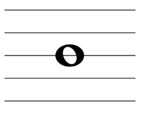
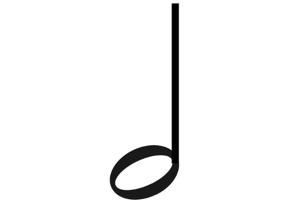
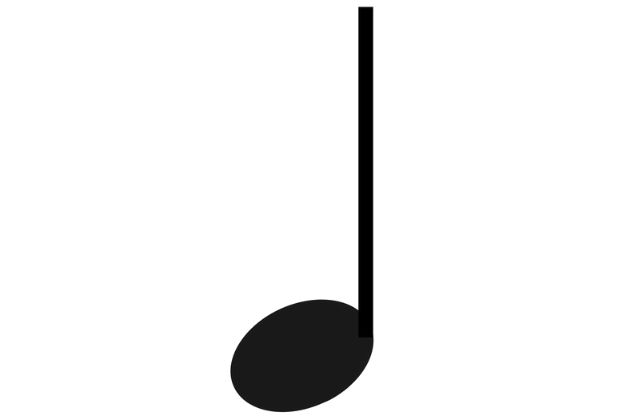
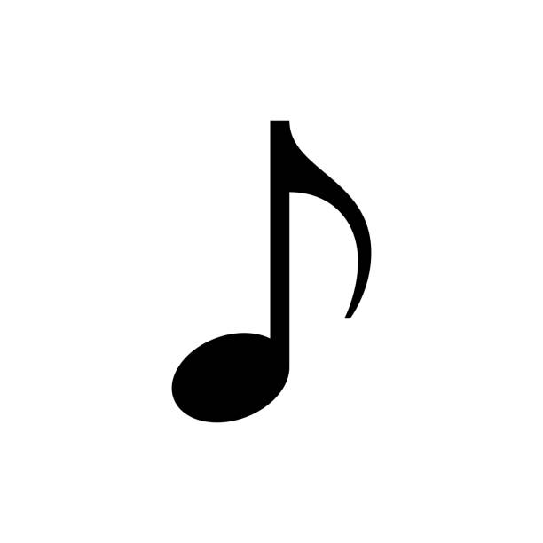
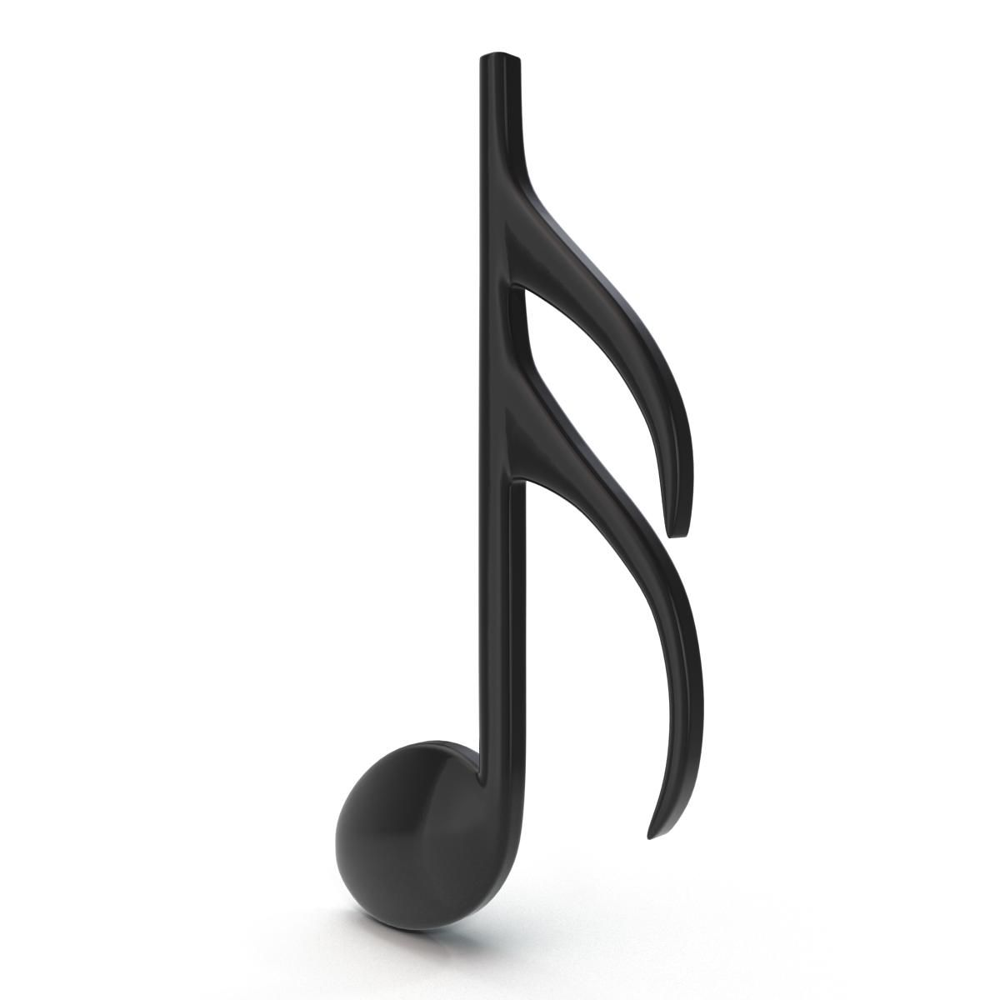
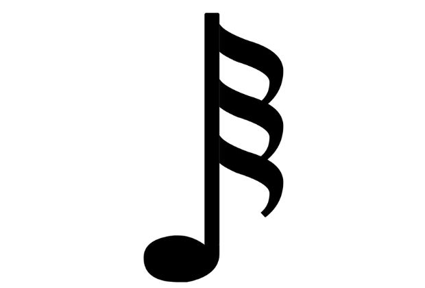
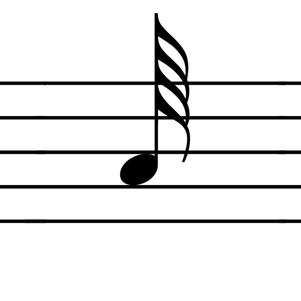

Dinâmica musical A dinâmica musical é a intensidade do som (para o caso do piano) ou a sensação que determinado trecho musical poderá transmitir.
Os símbolos mais usados para registrar a intensidade do som na partitura são:
O pianíssimo indica volume muito baixo, toque muito suave.
O piano indica: volume baixo, toque suave.
O forte indica: volume alto, toque pesado.
O fortíssimo indica: volume muito alto, toque muito pesado.
Legato: O legato indica que você deverá tocar as notas bem ligadas, segurando uma até o início da outra. Transmite a sensação de um som contínuo.
Trinado: O trinado indica que você deve tocar uma repetição muito rápida entre a nota que está escrita na partitura e a nota localizada um semitom ou um tom acima dela.
Ligadura: A ligadura une notas idênticas. Na prática, você irá somar o tempo das notas que a linha está unindo, tocando-as como se fossem uma só.
Apogiatura: A apogiatura (ou appoggiatura) informa que a nota pequena ao lado precisa ser tocada de maneira muito rápida, quase junto com a nota grande. É um “ornamento”, um pequeno enfeite.
Principais figuras musicais
Semibreve
A semibreve é a figura de nota musical de maior duração utilizada na notação musical padrão. Ela é a referência para a duração de outras notas e, na maioria dos casos, corresponde a quatro tempos ou batidas.
Mínima
Uma mínima é uma figura musical que representa uma duração igual à metade de uma semibreve e ao dobro de uma semínima. Em termos de contagem de tempo, em um compasso 4/4, a mínima dura dois tempos. Ela é representada por uma cabeça de nota oval vazia com uma haste vertical.
Semínima
É uma figura musical que equivale a um quarto da duração de uma semibreve ou metade de uma mínima. Em termos de tempo, em um compasso 4/4, a semínima geralmente ocupa um tempo ou pulso, sendo a unidade de tempo básica.
Colcheia
Em música, uma colcheia é uma figura musical que dura metade do tempo de uma semínima. Em termos simples, se uma semínima (um tempo) é dividida em duas partes iguais, cada parte é uma colcheia. Ela é representada por um círculo preenchido com uma haste e uma bandeirola (ou colchete).
Semicolcheia
Em música, uma semicolcheia, também chamada de "sixteenth note" em inglês americano ou "semiquaver" em inglês britânico, é uma nota musical com metade da duração de uma colcheia (ou "eighth note"). Isso significa que ela tem 1/16 da duração de uma semibreve.
Fusa
uma fusa é uma figura musical cuja duração é a metade de uma semicolcheia e o dobro de uma semifusa. Representa-se por um círculo preenchido com uma haste e três bandeirolas. Quando escrita acima da terceira linha da pauta, a haste fica à esquerda e virada para baixo; abaixo da terceira linha, a haste fica à direita e virada para cima.
Semifusa
A semifusa é uma figura musical que representa uma nota com duração de 1/64 de uma semibreve, ou metade de uma fusa. Ela é a figura de menor duração na notação musical tradicional, seguida pela fusa, semicolcheia, colcheia, semínima, mínima e semibreve, que tem a maior duração.
Para visualizar, a semifusa é representada por um círculo preenchido com uma haste e quatro bandeirolas. Se a nota estiver escrita até a terceira linha da pauta, a haste fica à direita da nota e voltada para cima.